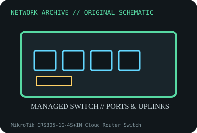

[ MODEL-SPECIFIC NETWORK HARDWARE ]
MikroTik CRS305-1G-4S+IN Cloud Router Switch
Compact four-port 10GbE SFP+ switch with a Gigabit copper management/data port. Confirm exact product label and revision before applying specifications.

IDENTIFICATION: Confirm manufacturer PID, hardware revision, device ID or module suffix. Nominal standards/link rates are not measurements of payload performance.
Exact specifications and compatibility
| Dedicated subcategory | Managed switches |
|---|---|
| Exact product/model | MikroTik CRS305-1G-4S+IN Cloud Router Switch |
| Bus, ports and physical interface | Four SFP+ cages supporting 10Gb/s and compatible lower-rate modules per port; one Gigabit RJ-45; dual DC input and passive PoE-in on RJ45. |
| PHY, radio or protocol | Marvell 98DX3236 switch chip; RouterOS/SwOS switching and management depend on OS configuration. |
| Nominal rate (not measured) | Four 10Gb/s SFP+ ports plus 1GbE RJ45 are nominal port rates; switching capacity/real forwarding depend on chip and configuration. |
| Measured throughput | No measured benchmark is claimed for a physical specimen. A valid result must record host/peer, link partner, media/cable, driver/firmware, traffic pattern, test tool and duration. |
| Drivers, OS and firmware | MikroTik RouterOS or SwOS according to RouterBOOT selection; feature and version support differ. |
| Compatibility | Use exact compatible SFP+ modules/DACs, power voltage and grounding; RJ45 PoE-in is passive input, not a PoE output. Confirm SFP+ transceiver temperature/host compatibility. |
| Variant warning | CRS305-1G-4S+IN is not CRS309-1G-8S+IN or CRS305-1G-4S+OUT. Indoor/outdoor, port count, enclosure and power specs differ. |
Model and revision notes
CRS305-1G-4S+IN is not CRS309-1G-8S+IN or CRS305-1G-4S+OUT. Indoor/outdoor, port count, enclosure and power specs differ.
MikroTik RouterOS or SwOS according to RouterBOOT selection; feature and version support differ.
Use exact compatible SFP+ modules/DACs, power voltage and grounding; RJ45 PoE-in is passive input, not a PoE output. Confirm SFP+ transceiver temperature/host compatibility.
Archival, ESD and preservation notes
Capture board model, RouterOS/SwOS version, SFP inventory, power inputs and port map. Cap optics, avoid fiber eye exposure and store ESD-safe.
Document source URL, access date, document revision and specimen label/condition. Preserve without credentials or private configuration.
Primary manufacturer and standards sources
- MikroTik CRS305-1G-4S+IN product pagePrimary manufacturer or standards documentation; verify exact SKU and host revision.
- MikroTik RouterOS documentationPrimary manufacturer or standards documentation; verify exact SKU and host revision.
- IEEE 802.3 Ethernet standardsPrimary manufacturer or standards documentation; verify exact SKU and host revision.
Manufacturer statements cover the named part or its documented product family; the exact labeled revision and vendor compatibility list take precedence.